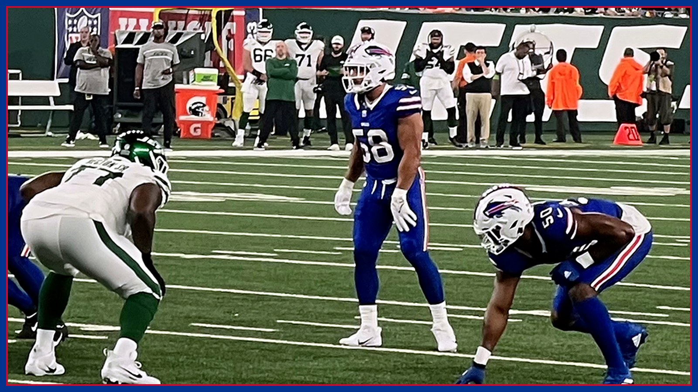

From the booth, Leonhard blitzed all afternoon. Was that Buffalo's new defense?
Buffalo set season highs in man coverage (54.8%), blitz rate (61.3%) and closed-middle looks (67.7%) against Baltimore, per Buffalo Rumblings — with Jim Leonhard calling plays from the booth for the first time. Brady confirmed the booth stays. Monday night in Minnesota decides whether the rest was real.

For six games, Jim Leonhard's defense had a calling card, and it was not a flattering one: heavy personnel, heavy boxes, the most Cover 4 in the league, a narrow menu of coverages, very little press and very little blitzing — a profile Buffalo Rumblings laid out in its look at this defense two weeks ago, attached to rankings of 30th in EPA per play allowed and 28th in success rate against. Then Baltimore came to town on Sunday, and Leonhard called a different sport. In Rumblings' tendency breakdown published Tuesday, Bruce Nolan charted season highs across the board in the 36-10 win: man coverage on 54.8% of snaps, a 61.3% blitz rate, middle-of-the-field-closed coverages on 67.7%, and pre-snap two-high looks rotating down to one-high after the snap at a season-high 25.8% rate. Press coverage, already rare, vanished entirely — 0.0%, down from a previous season low of 7.9%. And Leonhard called all of it from a new address: the booth, a move he said helped smooth out the operation, per Rumblings.
One of those changes is already confirmed as permanent — or as close to permanent as anything gets in November. Per Rumblings, head coach Joe Brady said at his Monday press conference that Leonhard's presence in the booth is the one change from Sunday that is definitively likely to continue. That matters more than it sounds. A coordinator in the booth sees route combinations and substitutions the way a quarterback in the film room does, a beat earlier and a layer cleaner, and if the price of that vision is losing the sideline huddle, Brady has clearly decided the trade is worth it. The blitz-and-man package that came with the booth debut, though? That is where Film Room has to slow everybody down — starting with the asterisk that swallowed Baltimore's whole afternoon.
The asterisk has a name and a thumb. Lamar Jackson injured the thumb on his throwing hand on Baltimore's first offensive snap, when his hand struck Greg Rousseau, and was replaced by Tyler Huntley, who himself later left with a toe injury, leaving undrafted rookie Joe Fagnano to finish his NFL debut. Rumblings is blunt about what that does to the data: every tendency change has to be heavily couched through the lens of Jackson's injury. Would Buffalo have blitzed 61% of the time with one of the greatest rushing quarterbacks ever standing across the line, free to punish a blitz that missed? Would it have played that much man coverage — defenders turning their backs to the quarterback — if the quarterback was Jackson instead of a third-string rookie? Nobody in Orchard Park can honestly answer yes, and the film cannot answer it for them.
What the film can say is what the plan did to the game in front of it. Baltimore finished with 144 total yards, three turnovers, four sacks taken and 12 quarterback hits absorbed, per Buffalowdown's recap of the win — and the tendency numbers explain the texture of that beating. Man coverage with a closed middle is a bet that your rush gets home before a receiver separates, and a 61.3% blitz rate is how you make sure the bet cashes: the quarterback holds the ball against tight coverage, the extra rusher arrives, and the throw that does come out is hurried into a defense that has already rotated into its one-high picture. The result nudged Buffalo's season rankings up to 24th in both points allowed (25.9 per game) and yards allowed (352.1), per the Democrat and Chronicle — still not a good defense on paper, but no longer the league's basement address it carried into the bye at 28.5 points allowed per game.
The personnel underneath the plan quietly cooperated, too. Ed Oliver, back after missing two games with a knee injury, played 20 snaps and registered three quarterback hits without a tackle, per the Democrat and Chronicle's injury update — exactly the kind of interior disruption a blitz-heavy plan needs, because the extra rusher only stays extra if the front four wins its share alone. TJ Parker, active after a questionable tag, added two tackles and a sack. And the back end gets a name back this week: safety C.J. Gardner-Johnson, whose one-game suspension was upheld on appeal, served his game against Baltimore and became eligible to return to the active roster on Nov. 2. Man coverage is a coverage you call with your best cover players available. Last Sunday, Buffalo called it without one of them.
Which brings us to the only test that counts. Buffalo (6-1) visits Minnesota (6-1) on Monday Night Football, Nov. 9 at 8:15 PM ET at U.S. Bank Stadium — and the Vikings' offense is, on paper, the mirror image of their blitzing, league-leading defense: Minnesota ranks 27th in scoring at 20.0 points per game and 29th in yards at 279.4, per the Democrat and Chronicle's matchup breakdown. If there was ever a week to find out whether Sunday's aggression was an identity or an accident of circumstance, it is against an offense that has struggled to punish anybody — with the honest Week 9 questions attached: early-week reporting listed Vikings quarterback Kyler Murray managing hamstring tightness, and Buffalo's first participation report for a Monday game does not arrive until Thursday, so the Sunday exits of Joshua Palmer (hamstring) and DJ Moore (knee), plus Spencer Brown, Greg Gaines and Dee Alford missing the Ravens game, are storylines to track this week, not designations to assume.
So here is the Film Room verdict, and it is deliberately two sentences long. The booth is real — Brady said so on Monday, and it stays. Everything else — the 61% blitz, the 55% man, the zero press, the disguised rotations — gets its verdict under the Monday night lights in Minneapolis, against a starting quarterback, in a 6-1-versus-6-1 game Buffalo cannot afford to treat as a laboratory. If Leonhard dials it up again and it works, Sunday was not a mirage produced by an injured thumb; it was the day this defense found itself. If the Cover 4 comes back, we will know Sunday was a one-week costume. Either way, for the first time all season, the most interesting unit on this team might not be the one with Josh Allen on it. Go Bills.
The BNC Blitz is free: the day's Bills news, one stat that matters, and one take, every morning. Join to keep reading — and never miss the end of a story again.